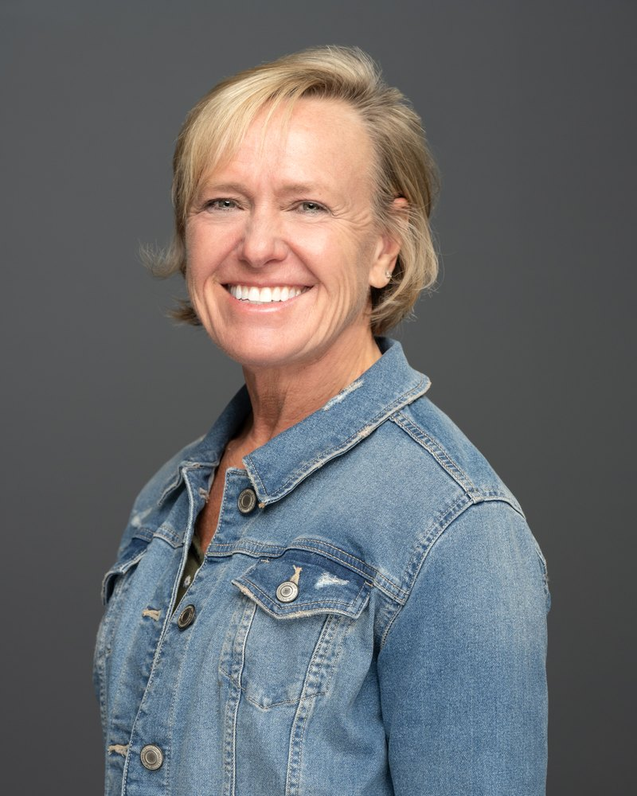

Mark Coffey
Mark leads our listings and negotiations. Before and alongside real estate, he's spent years around construction, so when he walks through a house he's looking at the roof, the foundation and the mechanicals, not just the paint colors. That helps sellers price right and helps buyers know what they're getting into.
Mark is very involved in the community and hosts the Scars podcast.

Patsy Coffey
Patsy co-owns the team with Mark and helps families across central Indiana buy and sell homes.
Outside of real estate, Patsy is serious about health and fitness. She shares the workouts and recipes she actually uses in Patsy's Health Corner.

Rebecca Coffey
Most of what Rebecca does happens behind the scenes. She keeps every file up to date and watches the paperwork and deadlines closely so problems get handled before they turn into surprises. From accepted offer to closing day, she keeps the lender, title company and other agent on the same page.
The part she loves most is the people. For sellers, that's showing their home in its best light with photography and hearing the stories and memories that go with the house. For buyers, it's the look on their faces when they find "the one."
Rebecca grew up in Indianapolis, graduated from Brownsburg High School and has lived in Morgan County for more than 20 years. She's been married for over 20 years and is a proud mom of two boys. She's a longtime member and board member at Lifeway Apostolic Church, and youth sports, Churches in Mission and local food pantries are close to her heart. "I believe most people have experienced a time in their lives when they needed a helping hand," she says, "and I appreciate organizations that work to make sure nobody is forgotten."
Away from work you'll find her playing pickleball, hiking, reading, at a concert or planning the next trip. Her yearly must-dos: A Christmas Carol at IRT, a walk downtown, dinner at Tony's and a stop at Dairy Queen.
"A great smile is a wonderful asset, but a good heart is pure gold." Dolly Parton, one of Rebecca's favorites
Faith and community are at the center of Rebecca's life, and she writes about both in Becca's Faith & Community corner.